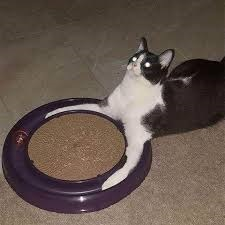

Feline Comedy, Paradiso
As we reach our final stretch of the journey of the Feline Comedy, we
enter the realm of the fully unknowable,as seen by the blurriness of the
piece. Now, only the cat repersented can truly experience the complete
sublime ecstacy of Heaven. As a result, what better way to express This
than through the art of the Hungry Cat. As food enters the body to be
consumed in order to enrich one's self, so too does the cat absorb the
few fragments of knowlwdge of Heaven that a perishable being is capable
of understanding.
Thus Spake Catathustra
Here we see the feline figure in its fullest form. The paws encircling
the meal like the true sage grasping the truths of the Earth in all its
vigour. The cat has surpassed all limits of normalcy and has entered the
realm of the divine. They are no longer a cat, really. They have become
the Supercat, smiling and laughing in the face of Chaos, no longer
cowering like a normal cat would. They have become the Lightning,
the Storm, the Clouds. They root their claws into the Earth and let
out a gleeful meow into the Sky as they hold their destiny in their
paws.

The Loops of Evil
The contrast beteen the bringht colors of the loops which are so
fervently saught after by the cat, and the blatant unhealthiness of
the snack is a representation of the duality of man as it searches
for beauty in an world filled with ugliness, and perhaps it is
precisely in this ugliness that we go looking for things that capture
us with their presence. Man must delve into the depths of despair in
order to find something worth living for.